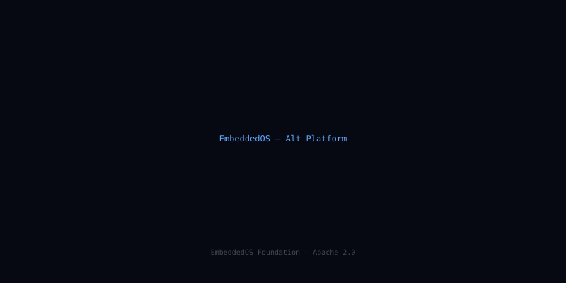

Ecosystem Map
A complete map of the EmbeddedOS product ecosystem — showing how every component fits together, what it depends on, and what it enables.
The EmbeddedOS Stack
Every layer of the stack is an independent open-source project that can be used standalone or as part of the full platform.

All Products at a Glance
| EoS | Foundation real-time embedded OS kernel — scheduler, HAL, BSP, capability security. The base layer everything else builds on. |
|---|---|
| eBootloader | Multi-architecture secure bootloader with ECDSA-256 chain of trust, anti-rollback, and OTA dual-bank update. |
| EAI | Embedded AI inference runtime — INT4/INT8/FP16, TFLite/ONNX/GGUF, Helium MVE acceleration, 11 tok/s on Cortex-M85. |
| ENI | 1,024-channel neural interface — 24-bit ADC, real-time spike sorting, BCI protocol stack, < 1 ms latency. |
| EIPC | Secure inter-process communication — capability-gated message queues, zero-copy shared memory, < 500 ns latency. |
| eBuild | Cross-compilation build system — CMake + Ninja, 8 toolchains, 41 target profiles, SDK generation, CI/CD integration. |
| EoSim | Embedded systems simulator — QEMU backend, HIL bridge, virtual peripherals, GDB remote, fault injection, coverage. |
| EoStudio | Embedded IDE — VS Code extension, RTOS-aware debug, peripheral view, power profiler, AI code assist, EoSim integration. |
| eDB | Embedded database — ACID transactions, AES-256-XTS encryption, B-Tree index, SQL subset, 64 KB min RAM. |
| eOS Platform | Integrated platform SDK combining all components with versioned compatibility guarantees and long-term support. |
Dependency Graph
How the components depend on each other. Arrows point from dependent to dependency.
EoS ← Foundation
EoS has no EmbeddedOS dependencies. It depends only on a C11 compiler and a BSP for the target hardware. Everything else builds on top of EoS.
eBootloader ← EoS (optional)
eBootloader can run standalone (before EoS is loaded) or as an EoS task for A/B update management. It depends on the EoS HAL for flash and crypto peripherals.
EIPC ← EoS
EIPC is a kernel-level component that requires EoS for process isolation, memory mapping, and capability token management.
EAI ← EoS + EIPC
EAI uses EoS for task scheduling and HAL access (DMA, NPU), and EIPC for inter-process model sharing and result streaming.
ENI ← EoS + EIPC + EAI
ENI uses EoS for real-time ADC acquisition, EIPC for streaming neural data to consumer tasks, and EAI for on-device spike classification.
eDB ← EoS
eDB uses EoS for flash HAL access, task scheduling, and mutex/semaphore primitives. It can also use EIPC for multi-process database access.
eBuild ← Host Tool
eBuild runs on the development host (Linux/macOS/Windows). It has no runtime dependency on EoS — it generates the binaries that run on EoS.
EoSim ← eBuild + EoS
EoSim simulates EoS-based firmware. It uses eBuild to compile firmware for the QEMU virtual target and wraps QEMU with EoS-specific machine models.
EoStudio ← eBuild + EoSim
EoStudio orchestrates eBuild for compilation and EoSim for simulation. It connects to real hardware via GDB/JTAG and to EoSim via GDB remote protocol.